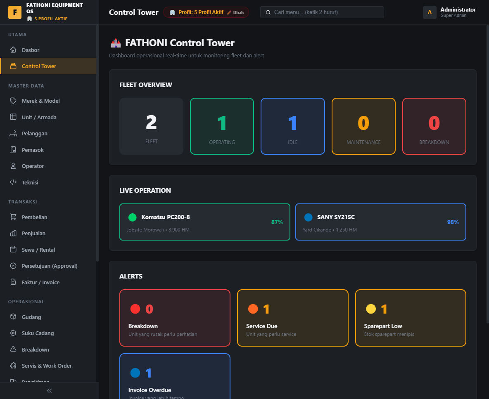

FATHONI EQUIPMENT OS 3.0.5 · Panduan Menu · 13 Oktober 2026
Panduan Menu — Control Tower
Kelompok sidebar
Utama
Alamat
#/control-tower (klik menu Control Tower di sidebar)
Peran yang melihat
semua peran
Mode bisnis
tidak disaring mode — selalu tampil selama peran memenuhi
Layar dipotret
1
Form dipotret
tidak ada form di menu ini
1. Kegunaan menu ini
Layar pemantauan fleet secara langsung: status unit, pekerjaan servis aktif, suku cadang menipis, dan tagihan. Empat tombol "View All …" di bawah mengarahkan ke menu yang bersangkutan.
2. Layar ketika dibuka
Control Tower ketika dibuka

control-tower-layar.png — 1184×967 piksel, 105 KB.
Judul di layar: 🏰 FATHONI Control Tower
Subjudul: Dashboard operasional real-time untuk monitoring fleet dan alert
Bagian daftar layar ini memakai komponen kartu rancangan halaman itu sendiri (bukan tabel dengan judul kolom), sehingga isinya cukup dilihat pada gambar di atas.
Tombol yang ada di layar (tanpa tombol profil/akun di bilah atas):
📦 View All Spareparts
3. Setelah disimpan — efek ke menu lain
Yang terjadi di belakang layar
Tidak menulis data. Angka diambil dari query SQLite (units, services, spareParts, invoices).
Tombol "View All Units / Services / Spareparts / Invoices" menavigasi ke menu terkait, bukan membuka jendela.
4. Perlu diketahui (apa adanya)
Batasan dan cacat yang terverifikasi di 3.0.5
Sama seperti Dasbor: angka pada gambar adalah data contoh PG-*.
Control Tower memakai komponen kartu sendiri, sehingga daftar ini tidak menampilkan tabel kolom.